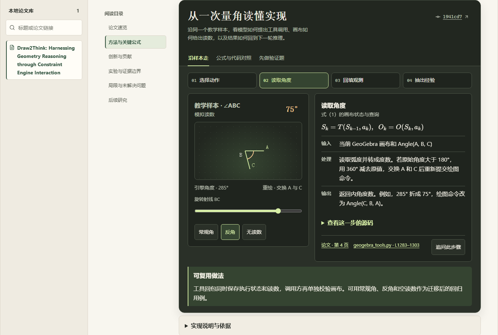

Understand the method
Step through architecture, equations, and reported results.
Local research workspace
Explore a method, trace its implementation at a pinned commit, and keep source-linked notes in one workspace.
Step through architecture, equations, and reported results.
Follow a representative sample through pinned source code.
Save follow-ups and methods with a path back to the source.
Draw2Think · repository walkthrough
Move the angle or choose a case to connect a paper observation to the value returned by the code. The values below are a teaching simulation.
Returned by the tool
{ "success": true, "value": 75 }
The command swaps the endpoints and subtracts the reflex angle from 360° before returning the interior angle.
PaperMaster stores papers, reading history, and notes locally. Generation uses the model connection you choose.

Requires Node.js 22.16 or later. Repository reading also requires Git.
npm install -g papermaster-reader@latest papermaster